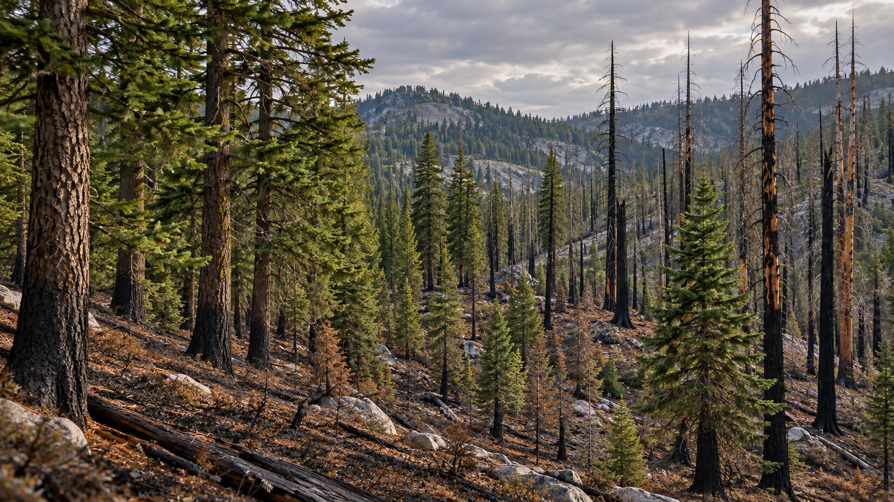
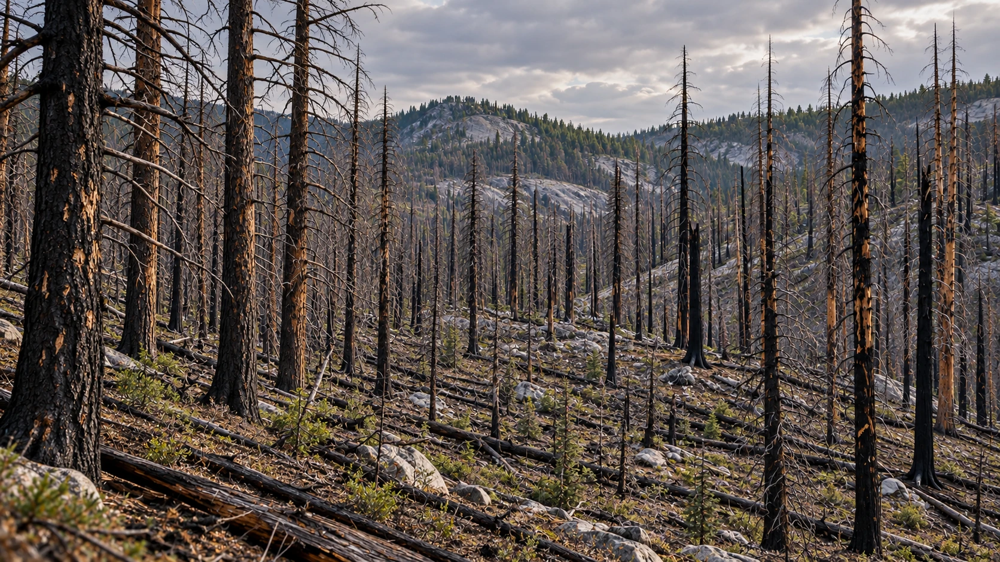

森林變了，怎麼知道哪些鳥還在？
先看森林的變化，再看 BirdNET 怎麼從聲音找鳥。
01 / 07
先看樹冠完整的森林
從同一個視角，先看看枝葉覆蓋與林下的位置。
播放時有聲音。真實鳥叫從 00:32 開始，也可按「聽這段鳥叫」直接試聽；沒有旁白。
已採用減少動態設定，先保留靜態畫面。按播放後才會開始，也可閱讀下方森林對照與全文。
同一視角，對照樹冠和林下
上方還留下多少枝葉？地面和低矮植物有什麼改變？切換圖片，分開看這兩個位置。
樹冠完整
先記住樹幹與枝葉的位置，作為切換情境時的對照。

火後仍保留較多樹冠
上方還有不少枝葉，變化更多出現在地面與低矮植物。

火後大量樹冠喪失
枝葉覆蓋明顯減少，留下更多裸露的枯幹。
三張都是生成情境，用來比較不同火後樣貌；不是同一地點的實測前後照片，也不是所有火災都會依序經過的變化。
從聽見鳥，到理解森林
不同鳥類需要的食物和棲身處不一樣。把核對過的鳥聲紀錄，和森林、火災條件一起看，才能替復育與保育提供更完整的線索。
這次示範用了什麼
- 一段真實鳥叫
- 錄音來自美國國家公園管理局（NPS）公開的 Yosemite 斑點鴞音檔，長約 5.303 秒。影片在 32、40、64 秒重播同一段聲音；它不是 Brunk 研究收集的錄音。
- 一次真正的教學辨識
- 這次把音檔交給官方 BirdNET+ V3.0-preview3.1 做了一次推論。這是較新的模型，不是原研究的客製版本，也不是 2021 年論文使用的 CNN；可查看這次推論結果。
- 第一候選，仍要回聽
- 第一候選是斑點鴞，模型分數為 0.735。這不是「73.5% 正確率」，也不是這個地點有斑點鴞的機率；畫面保留待人工核對狀態。
- 聲譜幫助看懂聲音
- 聲譜由同一音檔計算：橫軸是時間，縱軸是頻率，較亮的地方代表相對聲能量較強。這個版本的模型直接接收經重採樣的聲音波形（raw audio）；畫面上的聲譜用來說明，不是模型精確的內部張量或注意力圖，也不是模型判斷理由。
閱讀完整文字
先看樹冠完整的森林
從同一個視角，先看看枝葉覆蓋與林下的位置。這是生成的森林情境示意。
枝葉還在，林下已經不同
火後仍保留較多樹冠，地面與低矮植物卻已改變。
樹冠大量喪失，又是另一種環境
這裡大量樹冠喪失，留下更多裸露的枯幹。火的影響不能只用「燒過」兩字概括。
兩種鳥，尋找不同的生活條件
斑點鴞常在大樹與枝葉間休息、築巢；黑背啄木鳥會在燒過的樹幹找食物。樹皮和木材裡的甲蟲幼蟲，是牠的重要食物。
看不到鳥，也可能聽見牠
看不到鳥的時候，錄音器仍能留下牠們的聲音。
先聽同一段鳥叫
這是真實的斑點鴞錄音。波形隨聲音起伏；按「聽這段鳥叫」，可以一邊聽、一邊看。
把聲音展開來看
同一段聲音換成聲譜：橫向是時間，縱向是頻率。較亮的地方，代表相對聲能量較強。
先學習，再辨識新的聲音
BirdNET 事先從標有鳥名的錄音學習。新的音訊交給學好的模型，由它提出可能的鳥種。
模型提出斑點鴞
這次真正執行後，第一候選是斑點鴞，模型分數 0.735。這不是 73.5% 正確率。
有了鳥名，還要回到聲音
AI 提出的鳥名還是候選，需要人員回聽。聲音不清楚時，先保留疑問。
把鳥聲連回牠們的森林
把核對過的紀錄連到森林與火災條件，有助了解不同鳥類的需要。復育與保育，不能只替一種鳥做決定。